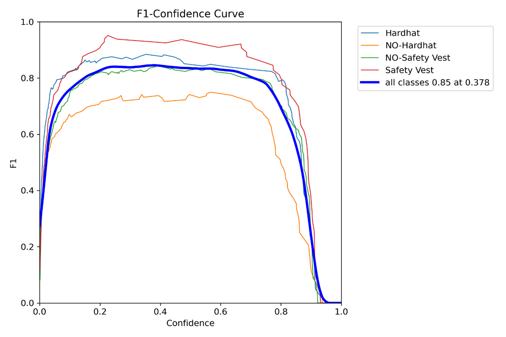
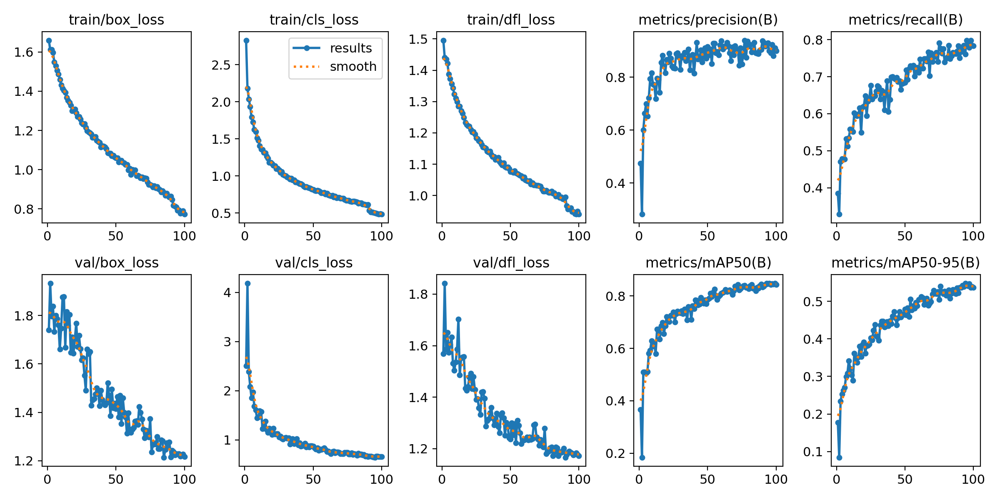
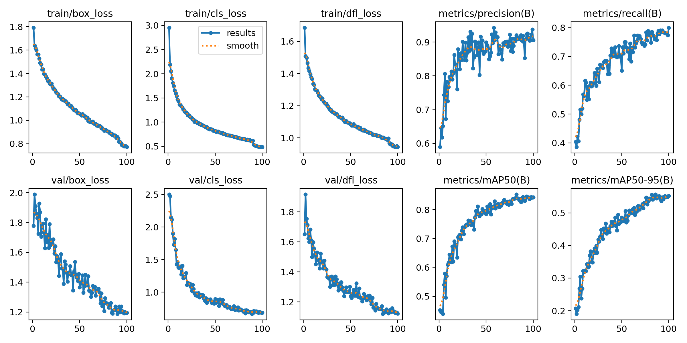

Experimental Setup
For experimentation, the PyTorch 2.2.2 deep learning framework was employed. The experimental setup featured a 12th Gen Intel(R) Core(TM) i7-12700H 2.30 GHz processor, 16 GB of memory, and the Windows 11 23H2 operating system. Training acceleration utilized an NVIDIA GeForce RTX 3060.
| Configuration | Name | Specific Information |
|---|---|---|
| Hardware Environment | CPU | i7-12700H |
| GPU | RTX 3060 | |
| VRAM | 128 MB | |
| Memory | 16 GB | |
| Software Environment | Operating System | Windows 11 |
| Python Version | 3.11.4 | |
| PyTorch Version | 2.2.2 | |
| CUDA Version | 12.4 | |
| cuDNN Version | 9.1.0 |
Consistent hyperparameters were applied throughout the training process across all experiments. Table 4-2 displays the precise hyperparameters employed during the training process. The Adam optimizer was employed with an initial learning rate of 0.01, a momentum parameter of 0.937, a weight decay of 0.0005, and a warmup learning rate for the first three epochs to mitigate early-stage overfitting. After the warm-up phase, cosine annealing scheduling was employed to adjust the learning rate. Training was occurred for over 100 epochs, with image pixel size set to 640 × 640 for both training and testing.
| Hyperparameters | Value |
|---|---|
| Learning Rate | 0.01 |
| Image Size | 640 × 640 |
| Momentum | 0.937 |
| Optimizer | Adam |
| Batch Size | 64 |
| Epoch | 100 |
| Weight Decay | 0.0005 |
Model Training
To validate the effectiveness of the proposed improved model BiFPN-YOLOv8, the model was trained using the same training set and hyperparameters as the original YOLOv8 model. The Table illustrates the final performance for comparison.
The table shows that the mAP50 for the YOLOv8 model is 84.78%. In contrast, the BiFPN-YOLOv8 model achieved 85.5%, an improvement of approximately 0.85%.
| Model | mAP50 (%) | FLOPs (GB) | FPS (f/s) | F1-Score |
|---|---|---|---|---|
| YOLOv8 | 84.78 | 8.1 | 140 | 0.83 |
| BiFPN-YOLOv8 | 85.50 | 8.3 | 188 | 0.85 |
The FLOPs of YOLOv8 are 8.1 GB, while those of BiFPN-YOLOv8 are slightly higher at 8.3 GB. This suggests that BiFPN-YOLOv8 is marginally more computationally intensive, necessitating a slightly greater number of floating-point operations.

The F1-Score of YOLOv8 is 0.83, while that of BiFPN-YOLOv8 is slightly higher at 0.85. A higher F1-Score means that the BiFPN-YOLOv8 model is more accurate and comprehensive in predicting positive and negative samples.

The results of YOLOv8 model

The results of BiFPN-YOLOv8 model
Additionally, the detection speed (FPS, frames per second) of the models was measured. YOLOv8 achieved a detection speed of 140 frames per second, while BiFPN-YOLOv8 achieved a detection speed of 188 frames per second.
Overall, the BiFPN-YOLOv8 model not only improves detection accuracy but also significantly enhances detection speed, demonstrating better performance.
Reviews
...